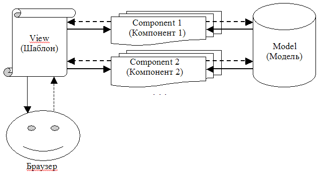

Для того чтобы система адекватно выглядела в браузере и поддерживала компонентный подход, она должна быть шаблонно-ориентированной, а не контроллерно-ориентированной. Шаблон определяет:
Изобразим новую схему взаимодействия элементов компонентного подхода.

Взаимосвязь элементов компонентного подхода
Мы видим, что, как и ожидалось, внимание переключилось с Контроллера на Шаблон. Давайте рассмотрим другие особенности схемы.
Примечание
К вопросу о первичности Шаблона. Представьте, что вы сидите перед монитором и пытаетесь попасть мышью в полосу прокрутки на окне. С чем вы тогда общаетесь — с окном и линейкой прокрутки, или же с той программой, которая обрабатывает движения курсора, перерисовывает линейку прокрутки и подкачивает данные с диска?.. Иными словами, на интуитивном уровне вы ведь "разговариваете" именно с интерфейсом объекта (Шаблоном), а не с его "внутренностями" (Контроллером или Компонентом), не так ли?.. Так что идея использования Шаблона в качестве первичного элемента вполне естественна.
Но позвольте, довольно сухой теории! Проиллюстрируем, как можно реализовать нашу гостевую книгу с использованием компонентного подхода. Мы приведем код Шаблона книги и ее единственного Компонента. Что касается Модели, то она не меняется, и ее код уже был приведен в листинге 50.5.